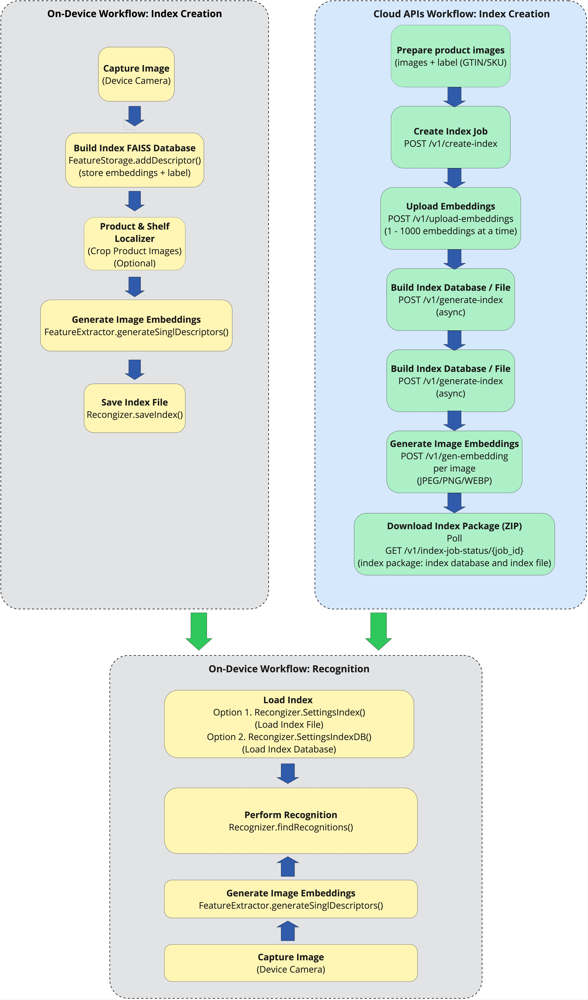

Overview
Product Recognition identifies enrolled products from an image by detecting them, extracting their visual features, and matching those features against a product database. This workflow is optimized for retail scenarios such as inventory tracking, shelf intelligence, and automated checkout.
Product recognition follows a three-step process:
- Localize - A detector finds shelves, labels, and products within the image. This is performed by either the ModuleRecognizer’s built-in detector (Unified Workflow) or the stand-alone Shelf and Product Localizer (Modular workflow).
- Extract - Detected product locations are sent along with the image to the Feature Extractor, which generates a unique digital signature (features) for each product.
- Match - The extracted features are matched against the product database to find the corresponding product SKU and accurately identify the product.
Two methods for implementation:
Unified Workflow (Recommended) - Uses the ModuleRecognizer - a single, high-level pipeline that handles all three steps automatically, from detection to recognition. This is best for most uses cases, simplifying integration by combining all steps into one configurable module, while still allowing configuration of detection-only or detection-plus-recognition modes.
Modular Workflow - Provides direct access to the low-level components to build a custom pipeline for each step. This is best for advanced or highly customized use cases requiring full control over each step of the process. Low–level components:
- Feature Extractor – Generates descriptors from detected product images.
- Feature Storage - Stores these descriptors in a vector database, creating a product knowledge base.
- Recognizer - Searches the database to find the most similar product and predict its SKU.
- Localizer – Detects shelves, labels, and products; cropped product regions can then be passed to the recognizer.
Product Enrollment, the process of equipping an AI system with the data to recognize items, requires a searchable product index. The Product Recognition Index Creator builds this index by converting product images into searchable digital fingerprints using advanced computer vision, enabling seamless recognition through the AI Data Capture SDK.
AI Model
The product-and-shelf-recognizer model is designed specifically for product and shelf recognition tasks. For more information and to download the model, refer to Product and Shelf Recognizer Model.
Index Creator
The Product Recognition Index Creator API is Zebra's cloud-based API for building the searchable index essential for any AI product recognition system. Using advanced computer vision, the API analyzes product images to classify items and generate a digital index. This index is then used by the Zebra Frontline AI Enabler to perform fast and accurate product identification in the field.
Key Features:
- Digital Fingerprints - Converts product images into unique digital identifiers, enabling users to search and retrieve items by uploading similar images.
- Automated Catalog Management - Groups similar products, categorizes them, and detects duplicates, streamlining catalog organization and improving inventory accuracy.
- Optimized Search Indexes - Builds efficient search tools for visual search, reducing catalog management time and improving inventory accuracy.
- Enhanced Workflow Efficiency - Automates tasks from image capture to index creation, minimizing manual effort and resource usage.
Product Enrollment and Indexing
Product enrollment is the foundational process of registering products into an AI system to make them recognizable. It involves collecting product attributes and processing them in three main steps:
- Uploading product data (e.g., images, descriptions, metadata).
- Extracting features from that data.
- Organizing and storing these features in a structured format for efficient retrieval.
The output of enrollment is an index, which serves as the backbone of the recognition system. The index is a highly optimized database that enables the AI to efficiently retrieve and recognize products based on user input. It is specifically designed for:
- Fast retrieval: Matching user inputs (like a photo) against products in the database.
- Similarity comparisons: Finding the closest match by comparing features of enrolled products with new data.
- Categorization: Grouping products into logical categories or hierarchies for better organization.
Product Recognition Index Creator Workflow: 
Additional resources:
- API Reference - For information on the available cloud APIs, visit Frontline AI Enabler Product Recognition Index Creator.
- Sample Application - To see a practical implementation, see the sample application.
ModuleRecognizer
The ModuleRecognizer class provides a unified pipeline for detecting shelves, labels, and optionally recognizing products (SKUs) using feature extraction and database/index matching. It combines localization and recognition into a single workflow, supporting both bounding box detection and product identification.
Key Features:
- Shelf, Label, and Product Detection - Detects shelves, labels, and products in an image, returning bounding boxes for each entity.
- Product Recognition (Optional) - When enabled, recognizes products (SKUs) by extracting features and matching them against a product database or index.
- Configurable Pipeline - Supports localization-only mode for shelves, labels and products or full recognition mode, if the following APIs are called: enableProductRecognitionWithIndex, enableProductRecognitionWithDb.
Developer Guide
This guide demonstrates how to detect shelves, labels, products, and optionally recognize products (SKUs) using the unified ModuleRecognizer pipeline.
Step 1: Initialization
- Import the ModuleRecognizer class: Use
com.zebra.ai.vision.detector.ModuleRecognizer. - Initialize the SDK: Use your application's context object and invoke
init()from the AIVisionSDK class. - Initialize Settings: Create a
ModuleRecognizer.Settingsobject with the model name or model file for localization. Optionally, enable product recognition by providing a feature product recognition model and either an index with label file or a database file. - Instantiate ModuleRecognizer: Use the
Settingsobject to create an instance ofModuleRecognizerwith aCompletableFuture. The thenAccept() method allows handling of the instantiated ModuleRecognizer for further operations.
Sample Code:
import com.zebra.ai.vision.detector.ModuleRecognizer;
// Developer must Initialize SDK by calling below API:
AIVisionSDK.getInstance(this.getApplicationContext()).init();
// Context refers to application context object.
String mavenModelName = "product-and-shelf-recognizer";
// Create settings for localization only
ModuleRecognizer.Settings settings = new ModuleRecognizer.Settings(mavenModelName);
// Optional – Enable product recognition with a database file
String productDbFile = "/path/to/product-db-file";
mrSettings settings.enableProductRecognitionWithDb(mavenModelName, productDbFile);
// Optional – Set runtime processor order to load the model
Integer[] rpo = new Integer[3];
rpo[0] = InferencerOptions.DSP;
rpo[1] = InferencerOptions.CPU;
rpo[2] = InferencerOptions.GPU;
mrSettings settings.inferencerOptions.runtimeProcessorOrder = rpo;
settings.inferencerOptions.defaultDims.height = 640;
settings.inferencerOptions.defaultDims.width = 640;
// Initialize ModuleRecognizer object
final ModuleRecognizer moduleRecognizer = null;
CompletableFuture<ModuleRecognizer> futureObject = ModuleRecognizer.getModuleRecognizer(mrSettings settings, executor);
// Use the futureObject to implement thenAccept() callback of CompletableFuture
futureObject.thenAccept(moduleRecognizerInstance -> {
// Use the moduleRecognizer object returned here for detection and recognition
moduleRecognizer = moduleRecognizerInstance;
}).exceptionally(e -> {
if (e instanceof AIVisionSDKException) {
Log.e(TAG, "[AIVisionSDKException] ModuleRecognizer object creation failed: " + e.getMessage());
}
return null;
});
Step 2: Detect and Recognize Entities
- Detection and Recognition: Call
process(imageData, executor)to detect shelves, labels, and products in the image. If product recognition is enabled, the returned products will include top-K SKU predictions. - Asynchronous Processing: Use the
thenAcceptmethod ofCompletableFutureto handle the result once entity detection and recognition is complete. This allows processing without blocking the main thread. - Resource Management: After processing is complete, call
dispose()on theModuleRecognizerobject to free resources and memory used during detection and recognition.
Sample Code:
import com.zebra.ai.vision.detector.ImageData;
import com.zebra.ai.vision.entity.Entity;
import com.zebra.ai.vision.entity.ShelfEntity;
import com.zebra.ai.vision.entity.LabelEntity;
import com.zebra.ai.vision.entity.ProductEntity;
import com.zebra.ai.vision.detector.SKUInfo;
// Prepare image data and executor
ImageData imageData = ImageData.fromBitmap(bitmap);
// Input params: imageData and an executor thread object for running the recognizer functionality
CompletableFuture<List<Entity>> futureEntities = moduleRecognizer.process(imageData, executor);
futureEntities.thenAccept(entities -> {
for (Entity entity : entities) {
if (entity instanceof ShelfEntity) {
ShelfEntity shelf = (ShelfEntity) entity;
// Access shelf bounding box and detection confidence
android.graphics.Rect shelfBox = shelf.getBoundingBox();
float shelfConfidence = shelf.getAccuracy();
// Access corner points if needed to draw on screen
List<Point> shelfCorners = shelf.getCorners();
}
else if (entity instanceof LabelEntity) {
LabelEntity label = (LabelEntity) entity;
// Access label bounding box and class ID
android.graphics.Rect labelBox = label.getBoundingBox();
LabelEntity.ClassId classId = label.getClassId();
float labelConfidence = label.getAccuracy();
List<Point> labelCorners = label.getCorners();
}
else if (entity instanceof ProductEntity) {
ProductEntity product = (ProductEntity) entity;
// Access product bounding box and SKU predictions
android.graphics.Rect productBox = product.getBoundingBox();
List<SKUInfo> topKSKUs = product.getTopKSKUs();
float accuracy = product.getAccuracy();
List<Point> productCorners = product.getCorners();
}
}
}).exceptionally(e -> {
if (e instanceof AIVisionSDKException) {
Log.e(TAG, "[AIVisionSDKException] Failed to process image : " + e.getMessage());
}
return null;
});
// Once done using the moduleRecognizer object, dispose the object to release the resources and memory used for detection and recognition
moduleRecognizer.dispose();
Notes:
- Localization Only - If product recognition is not enabled
ProductEntityobjects will contain only bounding box information. - Full Recognition - If product recognition is enabled,
ProductEntityobjects will include top-K SKU predictions and accuracy scores. - Thread Safety - The
ModuleRecognizerclass is thread-safe; however, always dispose of the instance when finished.
Methods
getModuleRecognizer(Settings settings, Executor executor)
CompletableFuture<ModuleRecognizer> getModuleRecognizer(Settings settings, Executor executor) throws IOException, InvalidInputException, AIVisionSDKLicenseException, AIVisionSDKSNPEException, AIVisionSDKModelException, AIVisionSDKException
Description: Asynchronously loads the localization model and, if configured, the product recognition models and resources. Returns a ModuleRecognizer object that can detect shelves, labels, and products in images, and optionally recognize products (SKUs).
Parameters:
- settings - The
ModuleRecognizer.Settingsobject containing configuration for localization and optional product recognition. - executor - Executor for delivering the result; if null, the SDK default executor is used.
Return Value: Returns a CompletableFuture that resolves to a ModuleRecognizer object.
Exceptions:
- InvalidInputException - Thrown if the
Settingsobject is null or required fields are missing. - AIVisionSDKLicenseException - Thrown if there are licensing issues related to the model.
- AIVisionSDKSNPEException - Thrown if SNPE fails to initialize.
- AIVisionSDKModelException - Thrown if the current SDK version is below the minimum required version. To resolve this, update the SDK to a newer or the latest version.
- AIVisionSDKException - Thrown if the AI Data Capture SDK is not initialized or if other SDK error occur.
- IOException - Thrown if the model or resource fails to load during initialization.
void Dispose()
void ModuleRecognizer.dispose()
Description: Releases all internal resources used by the ModuleRecognizer object, including models and native handles for localization, feature extraction, and recognition. This method should be called manually when the recognizer is no longer needed to free resources and prevent memory leaks.
enableProductRecognitionWithDb(String modelName, String productDB_Filepath)
void enableProductRecognitionWithDb(String modelName, String productDB_Filepath) throws InvalidInputException, AIVisionSDKException
Description: Enables product recognition using a feature extractor model (by name) and a product database file. This configures the recognizer to match detected products against entries in the specified database.
Parameters:
- modelName - The name of the model to be used for product recognition. Refer to feature models.
- productDB_Filepath - The file path to the product database.
Exceptions:
- InvalidInputException - Thrown if the
productDB_Filepathis null or empty. - AIVisionSDKException - Thrown if an error occurs during processing.
enableProductRecognitionWithDb(File modelFile, String productDB_Filepath)
void enableProductRecognitionWithDb(File modelFile, String productDB_Filepath) throws InvalidInputException, AIVisionSDKException
Description: Enables product recognition using a feature extractor model (as a file) and a product database file. This configures the recognizer to match detected products against entries in the specified database.
Parameters:
- modelFile - The feature extractor model file to use for product recognition.
- productDB_Filepath - The file path to the product database.
Exceptions:
- InvalidInputException - Thrown if
modelFileis invalid or ifproductDB_Filepathis null or empty. - AIVisionSDKException - Thrown if an error occurs during processing.
enableProductRecognitionWithIndex(String modelName, String indexFilePath, String labelFilePath)
void enableProductRecognitionWithIndex(String modelName, String indexFilePath, String labelFilePath) throws InvalidInputException, AIVisionSDKException
Description: Enables product recognition using a feature extractor model (by name), a product index file, and a label file. This configures the recognizer to match detected products against entries in the specified index and label files.
Parameters:
- modelName - The name of the model to be used for product recognition. Refer to feature models.
- indexFilePath – The file path to the product index file.
- labelFilePath – The file path to the product label file.
Exceptions:
- InvalidInputException - Thrown if
indexFilePathorlabelFilePathis null or empty. - AIVisionSDKException - Thrown if an error occurs during processing.
enableProductRecognitionWithIndex(File modelFile, String indexFilePath, String labelFilePath)
void enableProductRecognitionWithIndex(File modelFile, String indexFilePath, String labelFilePath) throws InvalidInputException, AIVisionSDKException
Description: Enables product recognition using a feature extractor model (as a file), a product index file, and a label file. This configures the recognizer to match detected products against entries in the specified index and label files.
Parameters:
- modelFile - The feature extractor model file to use for product recognition.
- indexFilePath – The file path to the product index file.
- labelFilePath – The file path to the product label file.
Exceptions:
- InvalidInputException - Thrown if
modelFileis invalid orindexFilePathorlabelFilePathis null or empty. - AIVisionSDKException - Thrown if an error occurs during processing.
ModuleRecognizer.Settings
The ModuleRecognizer.Settings class is a nested class within the ModuleRecognizer class. It provides configuration options for the module recognizer, allowing the ability to specify localization models and optionally enable product recognition using various sources. Multiple constructors and methods are available to tailor the configuration for different use cases.
Settings (String modelName)
ModuleRecognizer.Settings settings = new ModuleRecognizer.Settings(modelName) throws InvalidInputException, AIVisionSDKException;
Description: Constructor for the Settings object using the model name (e.g."product-and-shelf-recognizer"). This sets up the configuration for shelf, label, and product localization. Product recognition can be enabled later using the provided methods.
Parameters:
- ModelName - The name of the model to be used for product recognition. Refer to feature models.
Exceptions:
- InvalidInputException - Thrown if the
ModelNameis invalid. - AIVisionSDKException - Thrown if an error occurs while reading the specified model or if the SDK is not initialized.
Settings (File modelFile)
ModuleRecognizer.Settings settings = new ModuleRecognizer.Settings(modelFile) throws InvalidInputException, AIVisionSDKException;
Description: Constructs a new Settings object using a File object for the localization model. Product recognition can be enabled later using the provided methods.
Parameters:
- modelFile – The file object containing the localization model.
Exceptions:
- InvalidInputException – Thrown if the
modelFileis invalid. - AIVisionSDKException – Thrown if an error occurs while reading the model or if the SDK is not initialized.
InferencerOptions inferencerOptions
InferencerOptions = new InferencerOptions()
Description: An instance of InferencerOptions that provides additional configuration for the inferencer's behavior. The options include:
- Runtime processor order - Applies internally to the localizer and feature extractor, but not to the recognizer.
- Input dimensions - Applies only to the localizer.
Feature Extractor
The FeatureExtractor class generates a set of Descriptors, vectors of float numbers that offer a meaningful representation of the features of items identified within an image. It supports processing both entire images and specific regions defined by bounding boxes, accommodating various input formats and orientations. After the descriptors are generated, integration with Feature Storage allows for storage and retrieval of the descriptors for use.
Common Applications:
- Image Classification: Use descriptors that help classify images into categories, enhancing systems that sort or tag images based on visual content.
- Object Detection and Recognition: Extract features and generate descriptors from a whole image or specific regions of an image to help identify objects. This could be useful for surveillance, automated inspections or facial recognition within a crowd.
- Image Search and Retrieval: Implement image search functionality allowing to match objects to similar known entities from a database based on their descriptors, allowing for efficient and accurate visual searches. This could be useful to analyze specific areas of product images to detect defects or inconsistencies in manufacturing, ensuring high-quality standards.
- Oriented Object Detection: Extract features from specific image regions at known angles to improve object detection accuracy across various camera orientations. This is particularly useful in security systems.
Configuration options for Feature Extractor are offered through FeatureExtractor.Settings.
Developer Guide
This guide demonstrates how to create descriptors for entire images or specific regions, with the option to adjust for orientation if necessary.
Step 1: Initialization
- Import the FeatureExtractor class: Use
com.zebra.ai.vision.detector.FeatureExtractor. - Initialize the SDK: Use your application's context object and invoke
init()from the AIVisionSDK class. - Initialize Settings: Create a
Settingsobject with the model file path and model name. - Instantiate FeatureExtractor: Use the
Settingsobject to create an instance ofFeatureExtractorwith a CompletableFuture. ThethenAccept()method allows handling of the instantiatedFeatureExtractorfor further operations.
Sample Code:
import com.zebra.ai.vision.detector.FeatureExtractor;
// Developer must Initialize SDK by calling below API:
AIVisionSDK.getInstance(this.getApplicationContext()).init();
// Context refers to application context object.
String mavenModelName = "product-and-shelf-recognizer";
FeatureExtractor.Settings feSettings = new FeatureExtractor.Settings ( mavenModelName);
// Optional – Set runtime processor order to load the model
Integer[] rpo = new Integer[3];
rpo[0] = InferencerOptions.DSP;
rpo[1] = InferencerOptions.CPU;
rpo[2] = InferencerOptions.GPU;
feSettings.inferencerOptions.runtimeProcessorOrder = rpo;
// Initialize FeatureExtractor object
final FeatureExtractor featureExtractor = null;
CompletableFuture<FeatureExtractor> futureObject = FeatureExtractor.getFeatureExtractor (settings, executor);
// Use the futureObject to implement thenAccept() callback of CompletableFuture
futureObject.thenAccept(featureExtractorInstance -> {
// Use the featureExtractor object returned here for the detection of products
featureExtractor = featureExtractorInstance;
}).exceptionally(e ->{
if (e instanceof AIVisionSDKException) {
Log.e(TAG, "[AIVisionSDKException] FeatureExtractor object creation failed: " + e.getMessage());
}
return null;
});
Step 2: Generate Descriptors
Generate descriptors for either whole images or specific image regions, with the option to adjust orientation if required.
For a Whole Image
Initialization: Ensure that the
FeatureExtractoris properly initialized with the necessary settings. Prepare the bitmap image and executor for processing.Descriptor Generation: Call
generateSingleDescriptorwith the bitmap and executor. This method returns aCompletableFuturethat contains the image's descriptors.Without orientation adjustment:
CompletableFuture<Descriptor> futureObject = featureExtractor.generateSingleDescriptor (bitmap, executor);With orientation adjustment: Include the orientation angle at which the image was captured:
CompletableFuture<Descriptor> futureObject = featureExtractor.generateSingleDescriptor(bitmap, orientation, executor);
Asynchronous Processing: Use the
thenAcceptmethod ofCompletableFutureto handle the result once the descriptor generation is complete. This allows the descriptors for processing without blocking the main thread.Resource Management: After processing is complete, call
dispose()on theFeatureExtractorobject to free resources and memory used during feature extraction.// Input params: bitmap image and an executor thread object for running the feature extractor functionality CompletableFuture<Descriptor> futureObject = featureExtractor.generateSingleDescriptor (bitmap, executor); // If orientation adjustment is required, pass the orientation angle from which the image was taken // Comment out the code line above and use this line instead: // CompletableFuture<Descriptor> futureObject = featureExtractor.generateSingleDescriptor(bitmap, orientation, executor); futureObject.thenAccept (results -> { // Process the returned descriptor object }).exceptionally(e -> { if (e instanceof AIVisionSDKException) { Log.e(TAG, "[AIVisionSDKException] Failed to generate descriptor : " + e.getMessage()); } return null; }); // Once done using the featureExtractor object, dispose the object to release the resources and memory used for feature extraction featureExtractor.dispose();
For Specific Image Regions
Initialization: Ensure that the
FeatureExtractoris initialized. Prepare the bitmap image and define the array of bounding boxes (detections) that indicate the specific regions of interest. If applicable, determine the orientation angle of the image. Set up an executor to manage asynchronous task execution.Descriptor Generation for Regions: Call
generateDescriptors, passing the bounding boxes, bitmap, and executor. This returns aCompletableFuturethat outputs a descriptor object for each item specified by the bounding boxes.Without orientation adjustment:
CompletableFuture<Descriptor> futureObject = featureExtractor.generateDescriptors(detections, bitmap, executor);With orientation adjustment: Include the orientation angle at which the image was captured:
CompletableFuture<Descriptor> futureObject = featureExtractor.generateDescriptors(detections, bitmap, orientation, executor);
Asynchronous Processing: Use the
thenAcceptmethod ofCompletableFutureto process the descriptors as they are generated.Resource Management: After processing is complete, call
dispose()on theFeatureExtractorto release resources and memory used during extraction. This is essential for optimal performance and preventing memory leaks.
Sample Code:
// Input params: bitmap image; array of bounding boxes; an executor thread object thread object for running the feature extractor functionality
CompletableFuture<Descriptor> futureObject = featureExtractor.generateDescriptors(detections, bitmap, executor);
// If orientation adjustment is required, pass the orientation angle from which the image was taken
// Comment out the code line above and use this line instead:
// CompletableFuture<Descriptor> futureObject = featureExtractor.generateDescriptors(detections, bitmap, orientation, executor);
futureObject.thenAccept (results -> {
// Process the Descriptor object }).exceptionally(e -> {
if (e instanceof AIVisionSDKException) {
Log.e(TAG, "[AIVisionSDKException] generateSingleDescriptor Failed to generate descriptor : " + e.getMessage());
}
return null;
});
// Once done using the featureExtractor object dispose the object to release the resources and memory used for feature extraction
featureExtractor.dispose();
Methods
getFeatureExtractor(Settings settings, Executor executor)
CompletableFuture<FeatureExtractor> getFeatureExtractor(Settings settings, Executor executor) throws IOException, InvalidInputException, AIVisionSDKLicenseException, AIVisionSDKSNPEException, AIVisionSDKModelException, AIVisionSDKException
Description: Asynchronously loads the model and returns a FeatureExtractor object.
Parameters:
- settings - The
Settingsobject containing configuration for the feature extractor. - executor - Executor for delivering the result; if null, the SDK default executor is used.
Return Value: Returns a CompletableFuture that resolves to a FeatureExtractor object.
Exceptions:
- InvalidInputException - Thrown if the
Settingsobject is null. - AIVisionSDKLicenseException - Thrown if there are licensing issues related to the product-and-shelf-recognizer model.
- AIVisionSDKSNPEException - Thrown if SNPE fails to initialize.
- AIVisionSDKModelException - Thrown if the current SDK version is below the minimum required version. To resolve this, update the SDK to a newer or the latest version.
- AIVisionSDKException - Thrown if the AI Data Capture SDK is not initialized.
void Dispose()
void FeatureExtractor.dispose()
Description: Releases all internal resources used by the feature extractor object. This method should be called manually to free resources.
generateSingleDescriptor (Bitmap bmp, int orientation, Executor executor)
CompletableFuture<Descriptor> generateSingleDescriptor(Bitmap bmp, int orientation, Executor executor) throws InvalidInputException, AIVisionSDKException
Description: Generates a descriptor for a whole image with a specified orientation.
Parameters:
- bmp - The image to process.
- orientation - This refers to the orientation angle, which is of the Integer type:
- 0 - 0 degrees
- 1 - 90 degrees
- 2 - 180 degrees
- 3 - 270 degrees
- executor - Results are returned in this executor.
Return Value: A CompletableFuture with a Descriptor object as the output for a given input image.
Exceptions:
- InvalidInputException - Thrown if bmp is null or the orientation is invalid.
- AIVisionSDKException - Thrown if the image queue size is exceeded.
generateSingleDescriptor (Bitmap bmp, Executor executor)
CompletableFuture<Descriptor> generateSingleDescriptor(Bitmap bmp, Executor executor) throws InvalidInputException, AIVisionSDKException
Description: Generates a descriptor for a whole image without specifying orientation.
Parameters:
- bmp - The image to process.
- executor - Results are returned in this executor.
Return Value: A CompletableFuture with a Descriptor object as the output for a given input image.
Exceptions:
- InvalidInputException - Thrown if bmp is null or the orientation is invalid.
- AIVisionSDKException - Thrown if the image queue size is exceeded.
generateDescriptors (BBox[ ] detections, Bitmap bmp, int orientation, Executor executor)
CompletableFuture<Descriptor> generateDescriptors(BBox[] detections, Bitmap bmp, int orientation, Executor executor) throws InvalidInputException, AIVisionSDKException
Description: Generates a set of descriptors for each item in an image determined by an array of bounding boxes with a specified orientation.
Parameters:
- detections - Array of bounding boxes determining the location of items.
- bmp - The image to process.
- orientation - This refers to the orientation angle, which is of Integer type:
- 0 - 0 degrees
- 1 - 90 degrees
- 2 - 180 degrees
- 3 - 270 degrees
- executor - An
Executorfor asynchronous task execution.
Return Value: A CompletableFuture with a Descriptor object as the output for each of the items defined by the bounding boxes adjusted for the specified orientation.
Exceptions:
- InvalidInputException - Thrown if
bmpordetectionsis null ororientationis invalid. - AIVisionSDKException - Thrown if a the image queue size is exceeded.
generateDescriptors (BBox[ ] detections, Bitmap bmp, Executor executor)
CompletableFuture<Descriptor> generateDescriptors(BBox[] detections, Bitmap bmp, Executor executor) throws InvalidInputException, AIVisionSDKException
Description: Generates a set of descriptors for each item in an image determined by an array of bounding boxes without specifying orientation.
Parameters:
- detections - Array of bounding boxes determining the location of items.
- bmp - The image to process.
- executor - Results are returned in this executor.
Return Value: A CompletableFuture with a Descriptor object as the output for each of the items defined by the bounding boxes adjusted for the specified orientation.
Exceptions:
- InvalidInputException - Thrown if
bmpordetectionsis null. - AIVisionSDKException - Thrown if the image queue size is exceeded.
getFeatureExtractor (Settings settings, Executor executor)
CompletableFuture<FeatureExtractor> getFeatureExtractor(Settings settings, Executor executor) throws IOException, InvalidInputException, AIVisionSDKLicenseException, AIVisionSDKSNPEException, AIVisionSDKModelException, AIVisionSDKException
Description: Asynchronously loads the model and returns a FeatureExtractor object.
Parameters:
- settings - Settings to construct a
FeatureExtractorobject. - executor - A
FeatureExtractorobject is returned in this executor.
Return Value: A CompletableFuture containing the initialized FeatureExtractor object.
Exceptions:
- InvalidInputException - Thrown if
settingsis null. - AIVisionSDKLicenseException - Thrown if there is a licensing issue related to the product-and-shelf-recognizer model.
- AIVisionSDKSNPEException - Thrown if SNPE fails to initialize.
- AIVisionSDKModelException - Thrown if the current SDK version is below the minimum required version. To resolve this, update the SDK to a newer or the latest version.
- AIVisionSDKException - Thrown if the AI Data Capture SDK is not initialized.
FeatureExtractor.Settings
The FeatureExtractor.Settings class is a nested class within the FeatureExtractor class. It provides configuration options for the feature extractor, offering multiple constructors to initialize the settings with varying levels. This flexibility allows developers to tailor configurations according to their specific requirements.
Settings (String mavenModelName)
FeatureExtractor.Settings feSettings = new FeatureExtractor.Settings(mavenModelName) throws InvalidInputException,AIVisionSDKException;
Description: Constructor for the Settings object with the model name, in this case, "product-and-shelf-recognizer".
Parameters:
- mavenModelName - Name of the model specified in the Maven repository.
Exceptions:
- InvalidInputException - Thrown if the mavenModelName is invalid.
- AIVisionSDKException - Thrown if an error occurs while reading the specified model or if the SDK is not initialized.
Settings (File ModelFile)
FeatureExtractor.Settings feSettings = new FeatureExtractor.Settings(modelFile) throws InvalidInputException, AIVisionSDKException;
Description: Constructs a new Settings object with a File object passed.
Parameters:
- ModelFile - The file object that contains the Product and Shelf Localizer model.
Exceptions:
- InvalidInputException - Thrown if the ModelFile is invalid.
- AIVisionSDKException - Thrown if an error occurs while reading the model of if the SDK is not initialized.
Attributes
String modelName
Description: Name of the model in the compressed file, identifying which model to use from the provided resources.
InferencerOptions = new InferencerOptions()
Description: An instance of InferencerOptions, providing additional configuration options for the inferencer’s behavior.
Feature Storage
Feature Storage is primarily responsible for storing and updating the descriptors of items generated by the FeatureExtractor. It stores them in a database along with their corresponding class names to be used for detection by the Recognizer.
Developer Guide
This guide demonstrates how to retrieve descriptors from Feature Extractor and store them into the database.
Step 1: Initialization
- Import the
FeatureStorageclass: Use com.zebra.ai.vision.detector.FeatureStorage. - Initialize the SDK: Use your application's context object and invoke
init()from the AIVisionSDK class. - Initialize Settings: Create a
Settingsobject with the database file path (e.g., file_path/product.db) as the input parameter - Set up an Executor: Create an
Executorto receive theFeatureStorageobject. - Instantiate
FeatureStorage: Use theSettingsobject to create an instance ofFeatureStoragewith aCompletableFuture. ThethenAccept()method allows handling of theFeatureStoragefor further operations.
Sample Code:
import com.zebra.ai.vision.detector.FeatureStorage;
// initialize AI Vision SDK
AIVisionSDK.getInstance(this.getApplicationContext()).init();
// Create settings
FeatureStorage.Settings settings = new FeatureStorage.Settings(“data_base_file_path/product.db”);
FeatureStorage featureStorage = null;
// Initialize executor
Executor executor = Executors.newFixedThreadPool(1);
// Initialize FeatureStorage object
CompletableFuture<FeatureStorage> futureObject = FeatureStorage.getFeatureStorage(settings , executor);
futureObject.thenAccept(featureStorageInstance -> {
// Use the featureStorageInstance returned here for storing Feature descriptors generated by Feature Extractor.
featureStorage = featureStorageInstance;
}).exceptionally( e -> {
if (e instanceof AIVisionSDKException) {
Log.e(TAG, "[AIVisionSDKException] FeatureStorage object creation failed: " + e.getMessage());
}
return null;
});
Step 2: Store Feature Descriptors
Retrieve the feature descriptors: Use the
FeatureExtractorto obtain a Descriptor object, which contains descriptors of type float[][] from the provided bitmap image.Store descriptors: Store these descriptors from the Descriptor object into the database. The
label_fileparameter serves as the identifier for the product represented by the descriptors, anddescriptorObjcontains product's descriptors.// Obtain descriptorObj from FeatureExtractor and store the descriptors in the database using FeatureStorage featureStorage.addDescriptors(label_file , descriptorObj); // Dispose of the FeatureStorage object once it is no longer needed featureStorage.dispose();
Methods
getFeatureStorage(Settings settings, Executor executor)
CompletableFuture<FeatureStorage> getFeatureStorage(Settings settings, Executor executor) throws InvalidInputException, AIVisionSDKSNPEException, AIVisionSDKException
Description: Asynchronously loads the model and returns a FeatureStorage object.
Parameters:
- settings - Configuration options for the FeatureStorage.
- executor -
FeatureStorageobject is returned in this executor.
Return Value: Returns a CompletableFuture<FeatureStorage> object.
Exceptions:
- InvalidInputException - Thrown if the
Settingsobject is null. - AIVisionSDKSNPEException - Thrown if SNPE fails to initialize.
- AIVisionSDKException - Thrown if the AI Data Capture SDK is not initialized.
dispose()
void dispose()
Description: Releases all internal resources used by the FeatureStorage object. This method should be called manually to free resources.
addDescriptors (String label, Descriptor descriptorObj, boolean forceSupport, boolean randomTrim)
void addDescriptors(String label, Descriptor descriptorObj, boolean forceSupport, boolean randomTrim) throws InvalidInputException
Description: Adds descriptors for a product with options to support flagging and random trimming.
Parameters:
- label - Identifier of the product represented by the descriptors.
- descriptorObj - A
Descriptorobject containing the descriptors to add. - forceSupport - When set to
true, this flag marks the descriptors as support descriptors. It directly inserts a descriptor into the database, bypassing the clustering algorithm. This approach ensures more efficient processing and prepares the product database for immediate use with a new product. A support descriptor specifically represents a product and can be instantly utilized for various use cases. - randomTrim - When set to
true, random descriptors are removed when exceeding the maxUpdateN value; otherwise, descriptors at the back are removed.
Exceptions:
- InvalidInputException: Thrown when
descriptorObjorlabelis null.
addDescriptors(String label, Descriptor descriptorObj, boolean forceSupport)
void addDescriptors(String label, Descriptor descriptorObj, boolean forceSupport) throws InvalidInputException
Description: Adds descriptors for a product with an option to force support.
Parameters:
- label - Identifier of the product represented by the descriptors.
- descriptorObj - A
Descriptorobject containing the descriptors to add. - forceSupport - When set to
true, this flag marks the descriptors as support descriptors. It directly inserts a descriptor into the database, bypassing the clustering algorithm. This approach ensures more efficient processing and prepares the product database for immediate use with a new product. A support descriptor specifically represents a product and can be instantly utilized for various use cases.
Exceptions:
- InvalidInputException: Thrown when
descriptorObjorlabelis null.
addDescriptors(String label, Descriptor descriptorObj)
void addDescriptors(String label, Descriptor descriptorObj) throws InvalidInputException
Description: Adds descriptors for a product without additional flags.
Parameters:
- label: Identifier of the product represented by the descriptors..
- descriptorObj: A
Descriptorobject consisting the descriptors to add.
Exceptions:
- InvalidInputException: Thrown when
descriptorObjorlabelis null.
addDescriptorsWithImages(String label, Descriptor descriptorObj, byte[ ][ ] images, boolean forceSupport)
void addDescriptorsWithImages(String label, Descriptor descriptorObj, byte[][] images, boolean forceSupport) throws InvalidInputException
Description: Adds descriptors and associated images for a product with an option to force support.
Parameters:
- label - Identifier of the product represented b the descriptors.
- descriptorObj - A
Descriptorobject containing the descriptors to add. - images - An array of images to add.
- forceSupport - When set to
true, this flag marks the descriptors as support descriptors. It directly inserts a descriptor into the database, bypassing the clustering algorithm. This approach ensures more efficient processing and prepares the product database for immediate use with a new product. A support descriptor specifically represents a product and can be instantly utilized for various use cases.
Exceptions:
- InvalidInputException: Thrown when
descriptorObjorlabelis null.
addDescriptorsWithImages(String label, Descriptor descriptorObj, byte[ ][ ] images)
void addDescriptorsWithImages(String label, Descriptor descriptor, byte[][] images) throws InvalidInputException
Description: Adds descriptors and associated images for a product without forcing support.
Parameters:
- label - Identifier of the product represented by the descriptors.
- descriptorObj - A
Descriptorobject containing the descriptors to add. - images - An array of images to add.
Exceptions:
- InvalidInputException: Thrown when
descriptorObjorlabelis null.
incrementDescriptorHitCount(String label, Descriptor descriptorObj)
void incrementDescriptorHitCount(String label, Descriptor descriptorObj) throws InvalidInputException
Description: Increments the hit count for a specific product descriptor.
Parameters:
- label - Identifier of the product for which the hit count is updated.
- descriptorObj - The descriptor for which to update the hit count.
Exceptions:
- InvalidInputException - Thrown if
descriptorObjor label is null.
getSupportDescriptorsForProduct(String label)
float[][] getSupportDescriptorsForProduct(String label)
Description: Retrieves all support descriptors for a specified class.
Parameters:
- label - The product identifier for which to retrieve support descriptors.
Returns: Array of support descriptors for the specified product.
getAvailableClassNames()
String[] getAvailableClassNames()
Description: Retrieves the product labels from database with at least one supported descriptor.
Returns: List of product labels with support descriptors.
FeatureStorage.Settings
The FeatureStorage.Settings class provides options to configure the behavior of FeatureStorage.
String dbSource
Description: Specifies the location of the database.
int maxUpdateN
Description: Specifies the maximum number of descriptors that can be added from an image.
Recognizer
The Recognizer class offers methods to identify patterns from descriptors produced by the Feature Extractor and stored in Feature Storage. It determines the top matches for a given set of descriptors and manages the loading and saving of indices and labels for persistent storage. The class supports both synchronous and asynchronous result retrieval.
This guide begins with initial instructions for basic setup of the Recognizer after implementing Feature Extractor and Feature Storage. Subsequent sections offer a comprehensive list of Recognizer settings that can be fine-tuned for specific needs:
Developer Guide
This guide demonstrates how use the Recognizer to find recognitions based on the descriptors generated. Setup the database to store feature descriptors. Initialize the Recognizer with an index.
Step 1: Initialize Database
Import Necessary Classes: Import the
Recognizerclass and other necessary classes such asCompletableFutureandExecutor.Initialize SDK: Call
AIVisionSDK.getInstance(Context).init()from the AIVisionSDK class to initialize the SDK. Here,Contextrefers to the application context object.Configure SettingsDb Instance: Initialize a
Recognizer.SettingsDbobject and set thedbSourceattribute to the path of the SQLite database file containing the feature descriptors.Initialize Executor: Use
Executors.newFixedThreadPool(1)to create an Executor for managing asynchronous tasks efficiently.Instantiate Recognizer: Use the
getRecognizer(dbSettings, executor)method to get aCompletableFuture<Recognizer>object, initializing the recognizer with the database settings.Handle Asynchronous Result: Use
thenAccept()on theCompletableFutureto handle theRecognizerobject once it becomes available. Assign the recognizer instance to a variable for further use.import com.zebra.aivision.detector.Recognizer; // Initialize SDK AIVisionSDK.getInstance(this.getApplicationContext()).init(); // Context refers to application context object. // Initialize Recognizer settings object Recognizer.SettingsDb dbSettings = new Recognizer.SettingsIndex(); String database_file_path = “path_of_db_file”; // Full path to the SQLite database file dbSettings.dbSource = database_file_path ; // Initialize Recognizer object Recognizer recognizer = null; // Initialize recognizer from a database // settings = Recognizer.SettingsDb object created above // Initialize executor Executor executor = Executors.newFixedThreadPool(1); CompletableFuture<Recognizer> futureObject = Recognizer.getRecognizer(dbSettings, executor); // Use the futureObject to implement thenAccept() callback of CompletableFuture. futureObject.thenAccept (recognizerInstance -> { // Use the recognizer object returned here to recognize products recognizer = recognizerInstance; }).exceptionally( e -> { if (e instanceof AIVisionSDKException) { Log.e(TAG, "[AIVisionSDKException] Recognizer object creation failed: " + e.getMessage()); } return null; });
Step 2: Initialize Search Indexes
Import Necessary Classes: Import the
Recognizerclass and necessary concurrent utilities such asCompletableFutureandExecutor.Configure SettingsIndex: Create an instance of
Recognizer.SettingsIndexand set theindexFilenameandlabelFilenameattributes to the paths of the FAISS (Facebook AI Similarity Search) index and label files, respectively.Prepare Executor: Instantiate an
ExecutorusingExecutors.newFixedThreadPool(1)to handle asynchronous tasks efficiently.Initialize Recognizer: Use
Recognizer.getRecognizer(reSettings, executor)to obtain aCompletableFuture<Recognizer>object, which initializes the recognizer with the specified index settings.Handle Asynchronous Result: Use
thenAccept()on theCompletableFutureto handle theRecognizerobject once it’s ready. Assign the recognizer instance to a variable for further operations, such as product or shelf detection.import com.zebra.CVSDK.Recognizer; // Initialize Recognizer Recognizer.SettingsIndex reSettings = new Recognizer.SettingsIndex() //set product index file and product label file reSettings.indexFilename = “path_to_product.index”; // Fully qualified file path to FAISS index object for descriptors reSettings.labelFilename = “path_to_product.txt file”; // Fully qualified file path to FAISS index object for labels // Initialize Recognizer object Recognizer recognizer = null; // Initialize executor Executor executor = Executors.newFixedThreadPool(1); //Initialize recognizer from an index file CompletableFuture<Recognizer> futureObject = Recognizer.getRecognizer(reSettings,executor); //Use the futureObject to implement thenAccept() callback of CompletableFuture. futureObject.thenAccept (recognizerInstance -> { //Use the recognizer object returned here for the detection of Shelves/products recognizer = recognizerInstance; }).exceptionally( e -> { if (e instanceof AIVisionSDKException) { Log.e(TAG, "[AIVisionSDKException] Recognizer object creation failed: " + e.getMessage()); } return null; });
Step 3: Perform Recognition
Generate Descriptors: Use
FeatureExtractor.generateDescriptors()to obtain descriptors required for the recognition process.Perform Recognition: Invoke one of the following methods to find the appropriate matches for each descriptor:
- Top 5 matches:
recognizer.findRecognitions(descriptors, executor) - Top-k matches:
recognizer.findRecognitions(descriptors, k, executor)
- Top 5 matches:
Process Results: The results are handled asynchronously using
thenAccept(). Iterate through the returned Recognition[] to process each recognition result.Dispose Recognizer: After completing the recognition tasks, call recognizer.dispose() to release resources and memory utilized during the process.
// Initializing the AIVision SDK AIVisionSDK.getInstance(this.getApplicationContext()).init(); // Create an instance of SettingsDb Recognizer.SettingsDb settingsDb = new Recognizer.SettingsDb(); // Instantiate the Recognizer //settings = Recognizer.SettingsDb object created above // Initialize executor Executor executor = Executors.newFixedThreadPool(1); CompletableFuture<Recognizer> futureObject = Recognizer.getRecognizer(settings,executor); // Use the futureObject to implement thenAccept() callback of CompletableFuture. futureObject.thenAccept (recognizerInstance -> { // Use the recognizer object returned here for the detection of barcodes/Shelves/products recognizer = recognizerInstance; }).exceptionally( e -> { if (e instanceof AIVisionSDKException) { Log.e(TAG, "[AIVisionSDKException] Recognizer object creation failed: " + e.getMessage()); } return null; }); // Get the Descriptors from FeatureExtractor.generateDescriptors() // Perform Recognition // Find top-k recognitions for each item represented by a descriptor CompletableFuture<Recognition[]> futureObject = recognizer.findRecognitions(descriptors, k, executor); // Perform Recognition // Find top 5 recognitions for each item represented by a descriptor // CompletableFuture<Recognition[]> futureObject = recognizer.findRecognitions(descriptors, executor); futureObject.thenAccept (results -> { // Process the returned array of recognitions. } ); // Dispose resources // Once done using the recognizer object, dispose the object to release the resources and memory used for recognition recognizer.dispose();
Methods
getRecognizer (SettingsDb settings, Executor executor)
CompletableFuture<Recognizer> getRecognizer(SettingsDb settings, Executor executor) throws InvalidInputException, AIVisionSDKException
Description: Asynchronously retrieves a Recognizer using database settings.
Parameters:
- SettingsDb settings - Settings for initialization from a database.
- Executor executor - The
Recognizerobject is returned in this executor.
Return Value: A CompletableFuture<Recognizer> object.
Exceptions:
- InvalidInputException - Thrown if
SettingsIndexobject is null. - AIVisionSDKException - Thrown if the AI Data Capture SDK is not initialized.
getRecognizer (SettingsIndex settings, Executor executor)
CompletableFuture<Recognizer> getRecognizer (SettingsIndex settings, Executor executor) throws InvalidInputException, AIVisionSDKException
Description: Asynchronously retrieves a Recognizer object using index file settings.
Parameters:
- SettingsIndex settings - Settings for initialization from an index file.
- Executor executor - The
Recognizerobject is returned in this executor.
Return Value: A CompletableFuture<Recognizer> object.
Exceptions:
- AIVisionSDKException - Thrown if the AI Data Capture SDK is not initialized.
- InvalidInputException - Thrown if the
SettingsIndexobject is null.
Dispose()
void Recognizer.dispose()
Description: Frees or releases resources by the Recognizer; must be when the Recognizer is no longer needed.
findRecognitions(Descriptor descriptorObj, int k, Executor executor)
CompletableFuture<Recognition[]> findRecognitions(Descriptor descriptorObj, int k,Executor executor) throws InvalidInputException, AIVisionSDKException
Description: Finds the top-k recognitions for the given descriptors asynchronously.
Parameters:
- descriptorObj - Descriptor to use for recognitions.
- k - Number of maximum top recognitions to return.
- executor - Results are returned in this executor..
Return Value: A CompletableFuture<Recognition[]> array of recognitions.
Exceptions:
- AIVisionSDKException - Thrown if the image queue is exceeded.
- InvalidInputException - Thrown if
descriptorObjis null orkis not positive.
findRecognitions(Descriptor descriptorObj, Executor executor)
CompletableFuture<Recognition[]> findRecognitions( Descriptor descriptorObj, Executor executor) throws InvalidInputException, AIVisionSDKException
Description: Finds the top 5 classes for each item represented by a descriptor. A class is the product category of an item.
Parameters:
- descriptorObj -
Descriptorto use for recognitions. - executor - Results are returned in this executor.
Return Value: A CompletableFuture containing an array of Recognition objects.
Exceptions:
- InvalidInputException - Thrown if
descriptorObjis null. - AIVisionSDKException - Thrown if the image queue size is exceeded.
findRecommendations (Descriptor descriptorObj, int k)
Recommendation[] Recognizer.findRecommendations(Descriptor descriptorObj, int k) throws InvalidInputException
Description: This method identifies the top-k labels that match a set of descriptors as a whole.
Parameters:
- descriptorObj - The descriptor object used for recognition.
- k - The maximum number of top matches to return.
Return Value: An array of Recommendation objects.
Exceptions:
- InvalidInputException - Thrown if
descriptorObjis null orkis not positive.
saveIndex(String labelFilename, String indexFilename)
void Recognizer.saveIndex (String labelFilename, String indexFilename)
Description: Write the index state and labels to a file.
Parameters:
- labelFilename - Filename to write labels to.
- indexFilename - Filename to write indices to.
loadIndex()
void Recognizer.loadIndex (String labelFilename, String indexFilename)
Description: Read the index state and labels from a file.
Parameters:
- labelFilename - The filename to read labels from.
- indexFilename - The filename to read indices from.
Recognizer.Recognition
The Recognition class serves as a container for results from a product recognition process. Each instance of this class contains three parallel arrays: similarity, normalizedSimilarity, and sku. These arrays provide a comprehensive overview of the recognition results, including both the raw and normalized similarity scores, as well as the unique SKUs of the recognized products.
similarity
float Recognizer.Recognition.similarity[]
Description: This attribute stores the raw similarity scores, indicating the degree of similarity between the input data and each recognized product.
normalizedSimilarity
float Recognizer.Recognition.normalizedSimilarity[]
Description: This array contains the normalized similarity scores for each recognized product, allowing for a more uniform comparison across different recognition tasks.
sku
float Recognizer.Recognition.sku[]
Description: This attribute contains the SKU identifiers for each recognized product, facilitating product identification and inventory management.
Recognizer.SettingsDb
The Recognizer.SettingsDb class encapsulates the settings required for initializing a recognizer using a database. It provides mechanisms to define the database source, specify FAISS index parameters, and filter labels, among other configurations.
SettingsDb()
Recognizer.SettingsDb.SettingsDb() throws AIVisionSDKException
Description: Constructs a new SettingsDb object for initializing a Recognizer using database settings.
Exceptions:
- AIVisionSDKException - Thrown if the AI Data Capture SDK is not initialized.
SettingsDb(String modelFilePath)
Recognizer.SettingsDb.SettingsDb (String modelFilePath) throws AIVisionSDKException
Description: Constructs a new SettingsDb object with a specified model file path for configuring a Recognizer.
Parameters:
- filename - The file location containing resources for the recognizer, such as a meta file with configuration values.
resourceName
String Recognizer.SettingsDb.resourceName
Description: An optional parameter specifying the location of the file containing resources for the recognizer (i.e., meta files with configuration values). This allows for configuration overrides.
dbSource
String Recognizer.SettingsDb.dbSource
Description: Specifies the location of the database. This attribute is crucial for determining where the recognizer should source its data.
faissIndexString
String Recognizer.SettingsDb.faissIndexString
Description: Defines the type of the FAISS (Facebook AI Similarity Search) index, used to select the appropriate indexing strategy for the database.
faissParamsString
String Recognizer.SettingsDb.faissParamsString
Description: Additional parameters for the FAISS index, allowing for fine-tuning the index settings beyond the default configuration.
labelFilter
String[] Recognizer.SettingsDb.labelFilter
Description: A list of labels to ignore from the database, helping in filtering out unwanted data during the recognition process.
indexDimensions
Integer Recognizer.SettingsDb.indexDimensions
Description: Specifies the dimension of the vectors stored in the search index, ensuring compatibility between the data and the indexing method.
Recognizer.SettingsIndex
The Recognizer.SettingsIndex class manages settings for initializing a system from an index file. It provides constructors to create instances with default settings or with specified index and label file locations, making it useful for applications that require structured input data and label information for AI vision processing tasks.
SettingsIndex()
Recognizer.SettingsIndex.SettingsIndex()
Description: Constructs a new SettingsIndex object for initializing a Recognizer using default settings.
SettingsIndex(String index filename, String labelFilename)
Recognizer.SettingsIndex.SettingsIndex (String IndexFilePath, String LabelFilePath) throws InvalidInputException, AIVisionSDKException
Description: This constructor creates a new SettingsIndex object with specified file locations for both the index and label files. This is useful when specific files are needed to initialize the system.
Parameters:
- String IndexFilePath - The location of the file to read the index data.
- String LabelFilePath - The location of the file to read the label data.
Exceptions:
- InvalidInputException - Thrown if
IndexFilePathorLabelFilePathis null or empty. - AIVisionSDKException - Thrown if the AI Data Capture SDK is not initialized.
indexFilename
String Recognizer.SettingsIndex.indexFilename
Description: A string attribute that specifies the location of the path to the index file, facilitating the system's initialization with structured input data.
labelFilename
String Recognizer.SettingsIndex.labelFilename
Description: A string attribute that specifies the path to the label file, enabling the system to effectively associate labels with the indexed data.
Sample Apps
Refer to the following resources:
- Start building your first product and shelf recognizer application with the QuickStart Sample application source.
- Consult the Java/Kotlin snippets, which demonstrate the SDK's capabilities and can be easily integrated into your applications.
- Access advanced use case and technology-based demos through the Showcase Application, including the AI DataCapture demo, which outlines how users can enroll and recognize products in real-time.
- For instructions on accessing these demo apps, refer to the installation guide
- Access source code for these demos in the ZebraDevs github repo to easily build these capabilities into your application